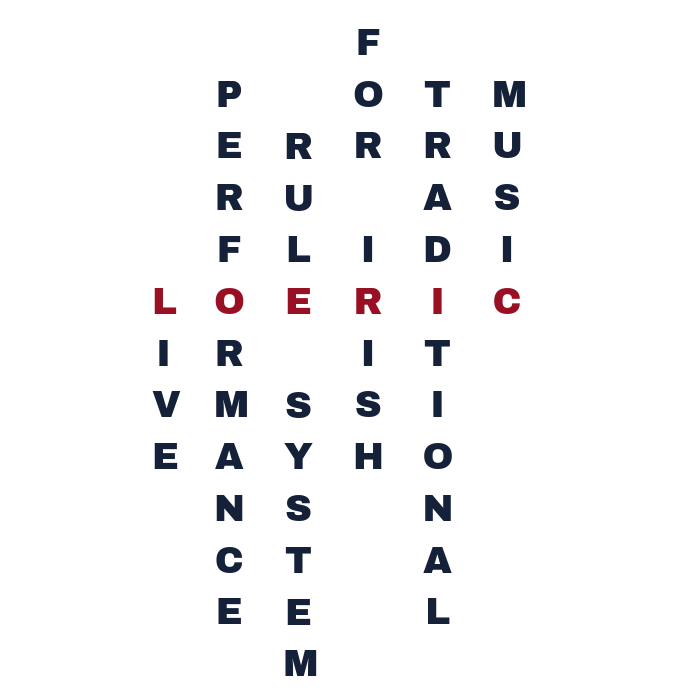
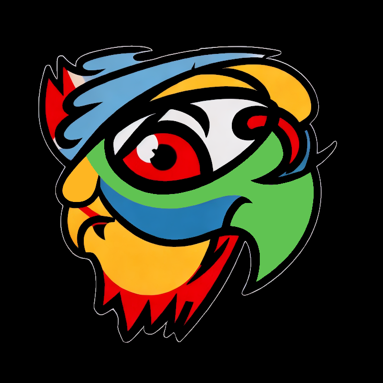
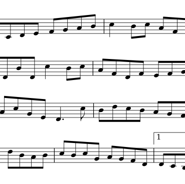
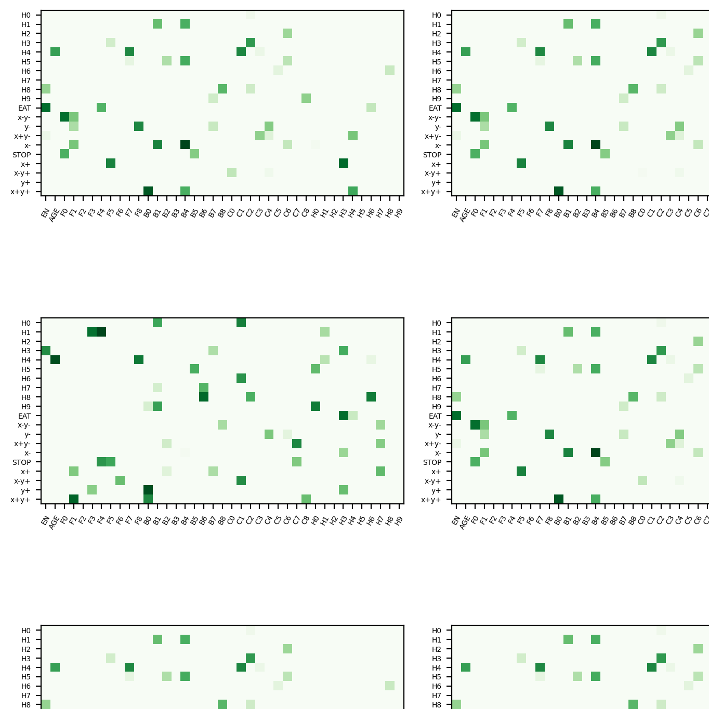

"Charting Creative Journeys through Musical Performance with AI"
C&C'26 — ACM Creativity and Cognition
ACM
PhD Researcher · AI & Music · University of Nottingham
I am a PhD student at the Mixed Reality Lab, University of Nottingham, within the UK Turing AI fellowship "Somabotics: Creatively Embodying AI". My research focuses on embodying co-creative musical AI, with particular attention to traditional music practices. Within Somabotics I lead the Traditionable Machines project.
Previously at KTH Royal Institute of Technology (Stockholm), within the ERC project MUSAiC — working on live performance systems, practice-led research, and ethical frictions between traditional communities and AI.
A real-time AI system developed for Irish traditional music performance. Given the score of a tune, LOERIC generates expressive ornamentation, timing and dynamics on the fly — listening and adapting to a human co-musician. LOERIC is designed to be highly configurable, allowing one to precisely customise its performance rules and interactive responses.


A fully AI-generated radio station streaming continuously on YouTube — music, speech, and station IDs, none of it pre-recorded.

A variational autoencoder for Irish traditional dance music — second prize at AMGC'22.

An experiment in agent-based artificial life with neural networks — evolving behaviours without explicit reward shaping.